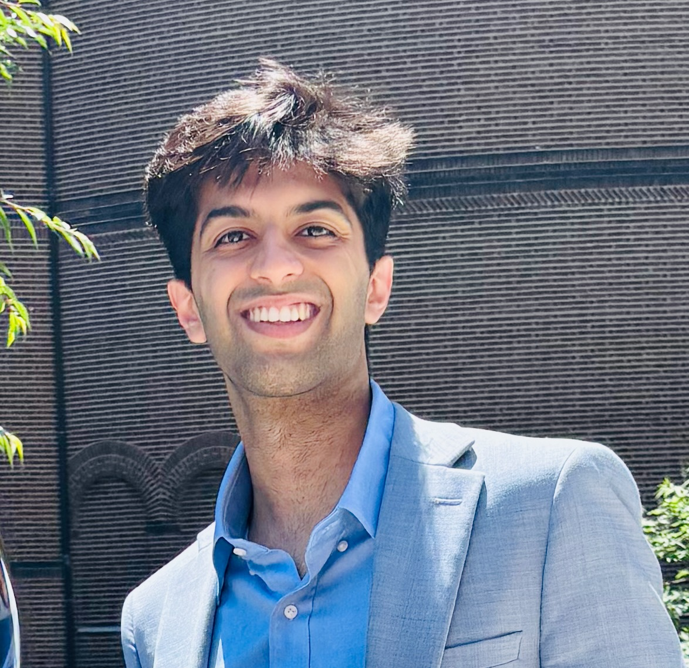

Shivek Narang
 LinkedIn
LinkedIn Coursework
CourseworkShivek Narang is a neuroscience researcher and global health advocate with a Master’s in Bioengineering and a Bachelor’s in Neuroscience and Cognitive Science, magna cum laude with Honors, from the University of Pennsylvania. His work focuses on improving neurological care access, advancing epilepsy and TBI research, and creating culturally sensitive mental health interventions.
Current Projects
- Research at CNT (Penn) – Mapping brain connectivity and identifying biomarkers in TBI and epilepsy.
- Empowerment Through Recovery – Peer support for TBI survivors. Website
- Our Teen Brains – Educating adolescents on mental health and neurodevelopment. Website
Research Profiles
Speaking & Workshop Topics
- Adolescent Brain Development & Mental Health
- Traumatic Brain Injury & Community-Based Recovery
Selected Honors & Fellowships
- President’s Engagement Prize (Finalist) – One of six student teams recognized in senior year at Penn for a TBI peer support initiative promoting community reintegration and recovery
- American Academy of Neurology Conference – 2024
- Sigma Xi IFoRE Research Award – 2024
- Mind Your Brain Fellowship – 2024
- CASI Research Fellowship – 2024
- Sigma Xi Honor Society – Award recipient and inducted in 2024 for excellence in engineering and scientific research
- Penn Undergraduate Research Mentoring Award – 2023
- World Science Scholar – Selected for an international cohort with exceptional promise in science and mathematics
- Stanford Online High School Science Department Award – one of three students recognized for outstanding achievement in the sciences
Research Highlights & Media Mentions
- Penn Medicine – AAN Annual Meeting 2024 Coverage
- Penn Medicine – AAN Annual Meeting 2024 Coverage | Abstract
- FirstWord Pharma – Neuro Research Coverage
- Luxembourg Institute of Health – Research Portal
- PubMed Central – Open Access Article
- CASI Newsletter – Penn Center for the Advanced Study of India
- Aravind Eye Care – Fellowship & Research Feature
- Stony Brook – Japan’s Stance on Stem Cell Research Policies
Profile
Explore my full experience, including detailed research, leadership, teaching, and innovation projects. Click here for the full profile page.